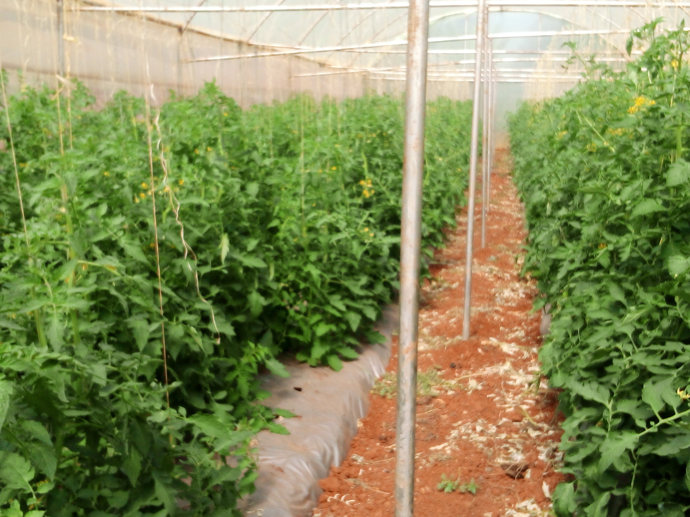

welcome to Kiama Green Acres,where nature's abundance meets farming.Nestled at the foot of the Majestic Karima Hill in Othaya,our farm is a thriving paradise of fresh,high-quality produce.From the vibrant capsicums that glows under our beautifully designed green houses to the crisp,hearty cabbages swaying in the gentle breeze,every corner of Kiama Green Acres is dedicated to producing the finest farm-to-table delight. Our farm is a blend of tradition and innovation with a unique mix of dairy and fish farming working perfectly with nature. our cows are nurtured with care,providing fresh,deliciousmilk and dairy products.our fish farming operations deliver healthy,sustainable fish contributing to both the local food security and environmental wellbeing.we believe in farming that respects the land and nourishes the community. come visit us and experience the vibrant spirit of rural kenya,where every product is a reflection of our commitment to quality and sustainability.
Our farm-grown yellow capsicums are vibrant, sweet, and packed with nutrients. Rich in vitamin C and antioxidants, these colorful peppers are perfect for adding a fresh, crisp flavor to salads, stir-fries, and grilling recipes.Read more
Our farm-fresh red bell peppers are sweet, juicy, and full of flavor. Rich in vitamins A and C, they add a delicious crunch and vibrant color to any dish.Read more
our cabbages bring healthy, farm-grown goodness to your table. Rich in nutrients like fiber and vitamin K, they are ideal for salads, soups, and hearty dishes.
Sweet, tangy, and harvested at the peak of ripeness, our tomatoes are perfect for any dish.Our ripe, juicy tomatoes are grown with care to bring you the freshest taste straight from the farm.